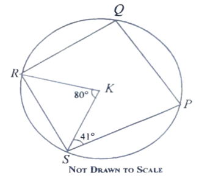
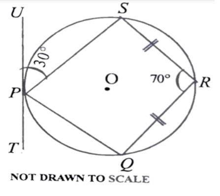
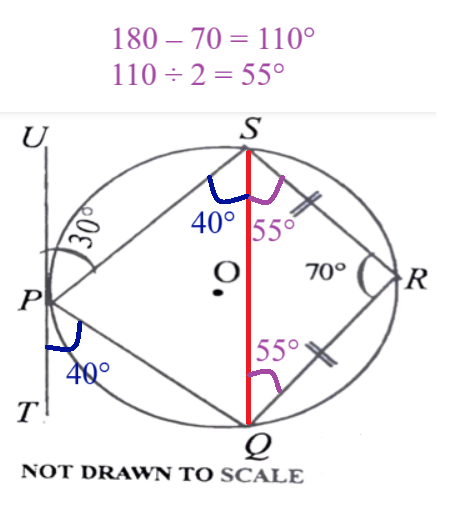
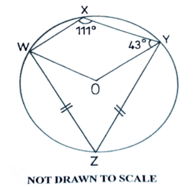
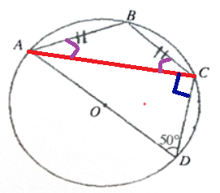
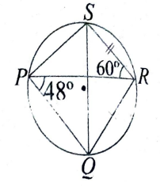
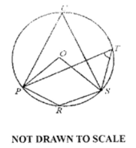
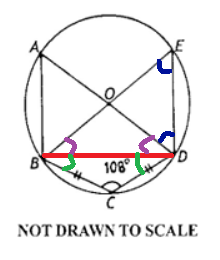
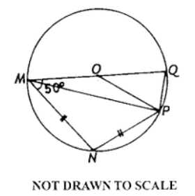
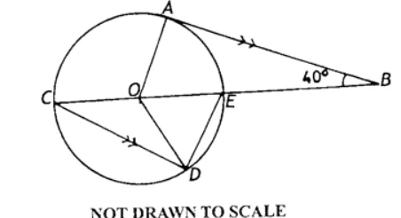

I greet you this day,
These are the solutions to the WASSCE past questions on Circle Theorems.
The link to the video solutions will be provided for you. Please subscribe to the YouTube channel to be notified
of upcoming livestreams.
You are welcome to ask questions during the video livestreams.
If you find these resources valuable and if any these resources were helpful in your passing the
Mathematics papers of WASSCE, please consider making a donation:
Google charges me for the hosting of this website and my other
educational websites. It does not host any of the websites for free.
Besides, I spend a lot of time to type the questions and the solutions well.
As you probably know, I provide clear explanations on the solutions.
Your donation is appreciated.
Comments, ideas, areas of improvement, questions, and constructive criticisms are welcome.
Feel free to contact me. Please be positive in your message.
I wish you the best.
Thank you.
Length of Arc, Area of Sector, Area of Circle, Circumference of Circle
Except stated otherwise, use:
$
d = diameter \\[3ex]
r = radius \\[3ex]
L = arc\:\:length \\[3ex]
A = area\;\;of\;\;sector \\[3ex]
\theta = central\:\:angle \\[3ex]
\pi = \dfrac{22}{7} \\[5ex]
RAD = radians \\[3ex]
^\circ = DEG = degrees \\[7ex]
\underline{\theta\;\;in\;\;DEG} \\[3ex]
L = \dfrac{2\pi r\theta}{360} \\[5ex]
\theta = \dfrac{180L}{\pi r} \\[5ex]
r = \dfrac{180L}{\pi \theta} \\[5ex]
A = \dfrac{\pi r^2\theta}{360} \\[5ex]
\theta = \dfrac{360A}{\pi r^2} \\[5ex]
r = \dfrac{360A}{\pi\theta} \\[7ex]
\underline{\theta\;\;in\;\;RAD} \\[3ex]
L = r\theta \\[5ex]
\theta = \dfrac{L}{r} \\[5ex]
r = \dfrac{L}{\theta} \\[5ex]
A = \dfrac{r^2\theta}{2} \\[5ex]
\theta = \dfrac{2A}{r^2} \\[5ex]
r = \sqrt{\dfrac{2A}{\theta}} \\[7ex]
Circumference\:\:of\:\:a\:\:circle = 2\pi r = \pi d \\[3ex]
L = \dfrac{2A}{r} \\[5ex]
r = \dfrac{2A}{L} \\[5ex]
A = \dfrac{Lr}{2}
$
Circle Theorems
(1.) The angle in a semicircle is a right angle (an angle of 90°).
(2.) Angles in the same segment of a circle are equal.
OR
Angles subtended by a chord of a circle in the same segment of the circle are equal.
(3.) The angle which an arc of a circle subtends at the center is twice the angle which the same
arc of the circle subtends at the circumference.
OR
The measure of any angle inscribed in a circle is half the measure of the intercepted arc.
(4.) The sum of the interior opposite angles of a cyclic quadrilateral is 180°
OR
The interior opposite angles of a cyclic quadrilateral are supplementary
(5.) The exterior angle of a cyclic quadrilateral is equal to the interior opposite angle.
(6.) The radius of a circle is perpendicular to the tangent of the circle at the point of contact.
This implies that the angle between the radius of a circle and the tangent to the circle at the point of
contact is 90°
(7.) Intersecting Tangents Theorem or Intersecting Tangent-Tangent TheoremandAngle of Intersecting Tangents Theorem
If two tangents are drawn from the same external point:
(a.) the two tangents are equal in length
(b.) the line joining the external point and the centre of the circle bisects the angle formed by the two
tangents.
(c.) the line joining the external point and the centre of the circle bisects the angle formed by the two
radii.
(8.) Alternate Segment Theorem
The angle between a tangent to a circle and a chord drawn from the point of contact, is equal to the angle in
the alternate segment.
(9.) If a line drawn from the center of the circle bisects a chord, then:
(a.) it bisects its arc (the angle opposite the chord) and
(b.) it is perpendicular to the chord.
(10.) If a line drawn from the center of the circle is perpendicular to a chord, then:
(a.) it bisects the chord and
(b.) it bisects its arc (the angle opposite the chord).
(11.) Intersecting Chords Theorem
When two chords intersect, the product of the lengths of the segments of one chord is equal to the product of
the
lengths of the segments of the other chord.
(12.) Angle of Intersecting Chords Theorem
The angle formed when two chords intersect is equal to half the sum of the intercepted arcs.
(13.) Intersecting Secants Theorem or Intersecting Secant-Secant Theorem
In the intersection of two secants from the same exterior point:
the product: of the distance between the first point and the external point and the distance between
the second point and the external point for the first secant is equal to
the product of the distance between the first point and the external point and the distance between the
second point and the external point for the second secant.
Alternatively, we can state it as: If two secant segments are drawn to a circle from an exterior point, then
the product of the measures of one secant segment and its external segment is equal to the product of the
measures of the other secant segment and its external segment.
(14.) Angle of Intersecting Secants (Inside the Circle) Theorem
The angle formed when two secants intersect inside a circle is equal to half the sum of the intercepted arcs.
(15.) Angle of Intersecting Secants (Outside the Circle) Theorem
The angle formed when two secants intersect outside a circle is equal to half the difference of the
intercepted arcs.
(16.) Intersecting Secant-Tangent Theorem or Intersecting Tangent-Secant Theorem
In the intersection of a secant and a tangent from the same external point:
the product of the distance between the first point and the external point and the distance between the
second point and the external point for the secant is equal to
the square of the distance between the point of contant and the external point for the tangent.
(17.) Angle of Intersecting Secant-Tangent Theorem
The angle formed when a secant and a tangent intersect outside a circle is equal to half the difference of the
intercepted arcs.
(1.)

In the diagram, P, Q, R and S are points on the circle centre K.
$\overline{KR}$ is a bisector of $\angle SRQ$
$\angle KSP$ = 41° and $\angle SKR$ = 80°
Find:
(a.) $\angle RQP$
(b.) $\angle SPQ$
In the diagram PQRST is a circle with centre O. POR and QOT are straight lines, $\overline{QT} || \overline{RS}$, $\angle RTQ = 33^\circ$ and
$|\overline{RS}| = |\overline{ST}|$.
Find $\angle RST$
In the diagram, BCDE is a circle with centre A.
$\angle BCD = (2x + 40)^\circ$, $\angle BAD = (5x - 35)^\circ$, $\angle BED = (2y + 10)^\circ$ and
$\angle ADC = 40^\circ$.
Find:
(a.) the values of x and y
(b.) $\angle ABC$
In the diagram, A, B, C, D are points on a circle.
ADE and BCE are straight lines.
$\angle DCE = 56^\circ$, $\angle ABE = (5x - 16)^\circ$ and $\angle BAE = \left(\dfrac{3}{2}x +
4y\right)^\circ$
If $\angle DCE : \angle CDE = 7 : 8$; find:
(a.) $\angle AEB$
(b.) the values of x and y
$
\angle DCE : \angle CDE = 7 : 8 \\[3ex]
\dfrac{\angle DCE}{\angle CDE} = \dfrac{7}{8} \\[5ex]
\dfrac{56}{\angle CDE} = \dfrac{7}{8} \\[5ex]
7 * \angle CDE = 56(8) \\[3ex]
\angle CDE = \dfrac{56(8)}{7} \\[5ex]
\angle CDE = 64^\circ \\[5ex]
(a.) \\[3ex]
\underline{\triangle CDE} \\[3ex]
\angle DEC + \angle DCE + \angle CDE = 180^\circ ...\text{sum of angles in a triangle} \\[3ex]
\angle DEC + 56 + 64 = 180 \\[3ex]
\angle DEC = 180 - 56 - 64 \\[3ex]
\angle DEC = 60^\circ \\[3ex]
\angle AEB = \angle DEC = 60^\circ ...diagram \\[5ex]
(b.) \\[3ex]
\angle CDE = \angle ABE ...\text{exterior angle of a cyclic quad is equal to the interior opposite angle}
\\[3ex]
64 = 5x - 16 \\[3ex]
5x - 16 = 64 \\[3ex]
5x = 64 + 16 \\[3ex]
5x = 80 \\[3ex]
x = \dfrac{80}{5} \\[5ex]
x = 16^\circ \\[5ex]
Also: \\[3ex]
\angle DCE = \angle BAE ...\text{exterior angle of a cyclic quad is equal to the interior opposite angle}
\\[3ex]
56 = \dfrac{3}{2}x + 4y \\[5ex]
2(56) = 2\left(\dfrac{3x}{2}\right) + 2(4y) \\[5ex]
112 = 3x + 8y \\[3ex]
8y = 112 - 3x \\[3ex]
y = \dfrac{112 - 3x}{8} \\[5ex]
y = \dfrac{112 - 3(16)}{8} \\[5ex]
y = 8^\circ
$
(6.)

$\overline{TU}$ is a tangent to the circle PQRS at P.
$\angle SPU = 30^\circ$, $\angle QRS = 70^\circ$, and $|\overline{QR}| = |\overline{RS}|$.
Find:
(a.) $\angle QPT$
(b.) $\angle PSR$
$
\underline{\text{Cyclic Quadrilateral PQRS}} \\[3ex]
\angle SPQ + \angle QRS = 180^\circ
...\text{interior opposite angles of a cyclic quad. are supplementary} \\[3ex]
\angle SPQ + 70 = 180 \\[3ex]
\angle SPQ = 180 - 70 \\[3ex]
\angle SPQ = 110^\circ \\[5ex]
(a.) \\[3ex]
\angle SPU + \angle SPQ + \angle QPT = 180^\circ ...\text{sum of angles on a straight line} \\[3ex]
30 + 110 + \angle QPT = 180 \\[3ex]
\angle QPT = 180 - 30 - 110 \\[3ex]
\angle QPT = 40^\circ \\[3ex]
$
To solve (b.), let us do some construction.
Use a line to join Point S to Point Q

$
\angle QSP = \angle QPT = 40^\circ \\[3ex]
...\text{angle between Tangent TU and Chord PQ is equal to the angle in the alternate segment} \\[5ex]
\underline{\triangle QRS} \\[3ex]
\angle RSQ = \angle RQS = k ...\text{base angles of isosceles triangle} \\[3ex]
\angle RSQ + \angle RQS + \angle QRS = 180^\circ ...\text{sum of interior angles of a triangle} \\[3ex]
k + k + 70 = 180 \\[3ex]
2k = 180 - 70 \\[3ex]
2k = 110 \\[3ex]
k = \dfrac{110}{2} \\[5ex]
k = 55^\circ \\[3ex]
\angle RSQ = \angle RQS = 55^\circ \\[5ex]
(b.) \\[3ex]
\angle PSR = \angle QSP + \angle RSQ ...\text{Diagram} \\[3ex]
\angle PSR = 40 + 55 \\[3ex]
\angle PSR = 95^\circ
$
(7.)

In the diagram, WXYZ are points on a circle centre O.
$\angle WXY = 111^\circ$, $\angle OYX = 43^\circ$ and $|\overline{WZ}| = |\overline{YZ}|$.
Calculate:
(a.) $\angle OWX$;
(b.) $\angle OYZ$
$
\underline{\text{Quadrilateral WXYZ}} \\[3ex]
\text{Reflex }\angle WOY = 2 * \angle WXY ...\text{central angle = twice the inscribed angle} \\[3ex]
= 2 * 111 \\[3ex]
= 222^\circ \\[5ex]
\text{Obtuse }\angle WOY + \text{Reflex }\angle WOY = 360^\circ ...\text{sum of angles at a point} \\[3ex]
\text{Obtuse }\angle WOY + 222 = 360 \\[3ex]
\text{Obtuse }\angle WOY = 360 - 222 \\[3ex]
= 138^\circ \\[5ex]
(a.) \\[3ex]
\text{Obtuse }\angle WOY + \angle OWX + \angle WXY + \angle XYO = 360^\circ \\[3ex]
...\text{sum of the interior angles of a quadrilateral} \\[3ex]
138 + \angle OWX + 111 + 43 = 360 \\[3ex]
\angle OWX = 360 - 138 - 111 - 43 \\[3ex]
= 68^\circ \\[3ex]
$
To solve for (b.), let us join the line from Point W to Point Y
In the diagram, PQRS is a circle.
$|\overline{PQ}| = |\overline{QS}|$, $\angle SPR = 26^\circ$ and the interior angles of $\triangle PQS$ are
in the ratio 2 : 3 : 3.
Calculate:
(a.) $\angle PQR$
(b.) $\angle RPQ$
(c.) $\angle PRQ$
In the diagram, ABCD are points on the circle centre O.
If $|\overline{AB}| = |\overline{BC}|$ and $\angle ADC = 50^\circ$, find $\angle BAD$.
Let us draw a line to join point A to point C

$
\underline{\text{Cyclic Quadrilateral ABCD}} \\[3ex]
\angle ABC + \angle ADC = 180^\circ ...\text{interior opposite angles of a cyclic quad are supplementary}
\\[3ex]
\angle ABC + 50 = 180 \\[3ex]
\angle ABC = 180 - 50 \\[3ex]
\angle ABC = 130^\circ \\[5ex]
\underline{\text{Isosceles Triangle ABC}}: |\overline{AB}| = |\overline{BC}| \\[3ex]
\angle BAC = \angle BCA = p ...\text{base angles of isosceles triangle} \\[3ex]
\angle BAC + \angle BCA + \angle ABC = 180^\circ ...\text{sum of the interior angles of a triangle}
\\[3ex]
p + p + 130 = 180 \\[3ex]
2p = 180 - 130 \\[3ex]
2p = 50 \\[3ex]
p = \dfrac{50}{2} \\[5ex]
p = 25 \\[3ex]
\angle BAC = \angle BCA = 25^\circ \\[5ex]
\angle ACD = 90^\circ ...\text{angle in a semicircle} \\[5ex]
\underline{\text{\triangle CAD}} \\[3ex]
\angle CAD + \angle ACD + \angle ADC = 180^\circ ...\text{sum of the interior angles of a triangle}
\\[3ex]
\angle CAD + 90 + 50 = 180 \\[3ex]
\angle CAD = 180 - 90 - 50 \\[3ex]
\angle CAD = 40^\circ \\[5ex]
\angle BAD = \angle BAC + \angle CAD...\text{Diagram} \\[3ex]
\angle BAD = 25 + 40 \\[3ex]
\angle BAD = 65^\circ
$
(10.)
In the diagram; O is the centre of the circle
|TS| = |SR|, ∠TPR = x°, ∠TQR = y°, ∠TOR = z° and
∠TSR = 118°
(i.) Find the relationship between x, y and z
(ii.) Calculate ∠STP
$
(i) \\[3ex]
x = y... \text{angles in the same segment of a circle are congruent} \\[3ex]
\angle TOP + z = 180^\circ... \text{sum of angles on a straight line} \\[3ex]
\angle TOP = 180 - z \\[3ex]
\angle PTO = \angle TPO = x ...\text{base angles of isosceles triangle } TOP \\[3ex]
\underline{\triangle TOP} \\[3ex]
\angle TPO + \angle PTO + \angle TOP = 180^\circ ...\text{sum of interior angles of a triangle} \\[3ex]
x + x + (180 - z) = 180 \\[3ex]
But\;\; x = y \\[3ex]
\text{And we need a relationship between }x, y, z \\[3ex]
x + y + 180 - z = 180 \\[3ex]
x + y - z = 180 - 180 \\[3ex]
x + y - z = 0 \\[3ex]
x + y = 0 + z \\[3ex]
x + y = z \\[3ex]
(ii) \\[3ex]
$
Construction: Draw the chord from point T to point R
$
\angle STR = \angle SRT = p ...\text{base angles of isosceles triangle } STR \\[3ex]
\angle STR + \angle SRT + \angle TSR = 180^\circ ...\text{sum of interior angles of the triangle} STR
\\[3ex]
p + p + 118 = 180 \\[3ex]
2p = 180 - 118 \\[3ex]
2p = 62 \\[3ex]
p = \dfrac{62}{2} \\[5ex]
p = 31 \\[3ex]
\therefore \angle STR = 31^\circ \\[3ex]
\angle PTR = 90^\circ ...\text{angle in a semicircle} \\[3ex]
\angle STP = \angle STR + \angle PTR ...\text{Diagram} \\[3ex]
\angle STP = 31 + 90 \\[3ex]
\angle STP = 121^\circ
$
(11.)

In the diagram, PQRS is a cyclic quadrilateral.
If |SR| = |RQ|, ∠SRP = 60° and ∠RPQ = 48°, find ∠PRQ
$
\angle QSR = 48^\circ ... \text{angles in the same segment of a circle are congruent} \\[3ex]
\angle SQR = \angle QSR = 48^\circ ...\text{base angles of isosceles triangle } RSQ \\[3ex]
\angle SRQ = \angle SRP + \angle PRQ ...\text{Diagram} \\[3ex]
\angle SRQ + \angle QSR + \angle SQR = 180^\circ ...\text{sum of interior angles of the triangle} RSQ
\\[3ex]
\implies \\[3ex]
(\angle SRP + \angle PRQ) + \angle QSR + \angle SQR = 180 \\[3ex]
60 + \angle PRQ + 48 + 48 = 180 \\[3ex]
\angle PRQ + 156 = 180 \\[3ex]
\angle PRQ = 180 - 156 \\[3ex]
\angle PRQ = 24^\circ
$
(12.)

In the diagram, O is the centre of the circle PRSTU and $\angle PTS = 58^\circ$.
Find:
(a.) $\angle POS$;
(b.) $\angle PRS$
In the diagram, O is the centre of the circle ABCDE, $|\overline{BC}| = |\overline{CD}|$ and
$\angle BCD = 108^\circ$.
Find $\angle CDE$
Construction: Draw a line from point B to point D
Look at the different colors

$
\underline{\text{Quadrilateral BECD}} \\[3ex]
\angle E + \angle C = 180^\circ ...\text{interior opposite angles of a cyclic quad are supplementary}
\\[3ex]
\angle E + 108 = 180 \\[3ex]
\angle E = 180 - 108 \\[3ex]
= 72^\circ \\[5ex]
\underline{\triangle DOE} \\[3ex]
\angle OED = \angle E ...\text{diagram} \\[3ex]
\angle ODE = \angle OED = 72^\circ ...\text{base angles of isosceles triangle} \\[5ex]
\text{Reflex }\angle BOD = 2 * \angle BCD...\text{angle at centre = twice angle at circumference} \\[3ex]
\text{Reflex }\angle BOD = 2(108) \\[3ex]
= 216^\circ \\[3ex]
\text{Obtuse }\angle BOD + \text{Reflex }\angle BOD = 360^\circ ...\text{sum of angles at a point} \\[3ex]
\text{Obtuse }\angle BOD + 216 = 360 \\[3ex]
\text{Obtuse }\angle BOD = 360 - 216 \\[3ex]
= 144^\circ \\[5ex]
\underline{\triangle BOD} \\[3ex]
\angle OBD = \angle ODB = p ...\text{base angles of isosceles triangle} \\[3ex]
\angle OBD + \angle ODB + \text{Obtuse }\angle BOD = 180^\circ
...\text{sum of the interior angles of a triangle} \\[3ex]
p + p + 144 = 180 \\[3ex]
2p = 180 - 144 \\[3ex]
p = \dfrac{36}{2} \\[5ex]
p = 18 \\[3ex]
\angle OBD = \angle ODB = 18^\circ \\[5ex]
\underline{\triangle BCD} \\[3ex]
\angle CBD = \angle CDB = k ...\text{base angles of isosceles triangle} \\[3ex]
\angle CBD + \angle CDB + \angle BCD = 180^\circ ...\text{sum of the interior angles of a triangle}
\\[3ex]
k + k + 108 = 180 \\[3ex]
2k = 180 - 108 \\[3ex]
k = \dfrac{72}{2} \\[5ex]
k = 36 \\[3ex]
\angle CBD = \angle CDB = 36^\circ \\[5ex]
\angle CDE = \angle CDB + \angle ODB + \angle ODE ...\text{diagram} \\[3ex]
= 36 + 18 + 72 \\[3ex]
= 126^\circ
$
(14.)

In the diagram, MNPQ is a circle with centre O.
$|MN| = |NP|$ and $\angle OMN = 50^\circ$.
Find:
(i.) $\angle MNP$;
(ii.) $\angle POQ$
$
\underline{\triangle MOP} \\[3ex]
\angle OMP = \angle OPM = x^\circ ...\text{base angles of isosceles triangle} \\[5ex]
\angle OMP + \angle OPM + \text{Obtuse }\angle MOP = 180^\circ
...\text{sum of the interior angles of a triangle} \\[3ex]
x + x + \text{Obtuse }\angle MOP = 180 \\[3ex]
\text{Obtuse }\angle MOP = 180 - 2x \\[3ex]
\text{Obtuse }\angle MOP + \text{Reflex }\angle MOP = 360^\circ ...\text{sum of angles at a point} \\[3ex]
(180 - 2x) + \text{Reflex }\angle MOP = 360 \\[3ex]
\text{Reflex }\angle MOP = 360 - (180 - 2x) \\[3ex]
= 360 - 180 + 2x \\[3ex]
= 180 + 2x \\[5ex]
\underline{\triangle MNP} \\[3ex]
\angle NMP = \angle NPM = y^\circ ...\text{base angles of isosceles triangle} \\[5ex]
\angle NMP + \angle NPM + \angle MNP = 180^\circ ...\text{sum of the interior angles of a triangle}
\\[3ex]
y + y + \angle MNP = 180 \\[3ex]
\angle MNP = 180 - 2y \\[5ex]
\text{Reflex }\angle MOP = 2 * \angle MNP ...\text{angle at centre = twice angle at circumference} \\[3ex]
180 + 2x = 2(180 - 2y) \\[3ex]
2(90 + x) = 2(180 - 2y) \\[3ex]
90 + x = 180 - 2y \\[3ex]
x + 2y = 180 - 90 \\[3ex]
x + 2y = 90...eqn.(1) \\[5ex]
\angle NMP + \angle OMP = \angle OMN ...\text{Diagram} \\[3ex]
y + x = 50^\circ \\[3ex]
x + y = 50...eqn.(2) \\[5ex]
eqn.(1) - eqn.(2) \implies \\[3ex]
2y - y = 90 - 50 \\[3ex]
y = 40^\circ...eqn.(3) \\[3ex]
\text{Substitute for y in eqn.(2)} \\[3ex]
x + 40 = 50 \\[3ex]
x = 50 - 40 \\[3ex]
x = 10^\circ \\[3ex]
(i.) \\[3ex]
\angle MNP = 180 - 2y \\[3ex]
= 180 - 2(40) \\[3ex]
= 100^\circ \\[3ex]
(ii.) \\[3ex]
\angle POQ = 2 * \angle OMP ...\text{angle at centre = twice angle at circumference} \\[3ex]
= 2 * x \\[3ex]
= 2(10) \\[3ex]
= 20^\circ
$
(15.)

In the diagram, $\overline{AB}$ is a tangent to the circle with centre O and COB is a straight
line.
If $\overline{CD} || \overline{AB}$ and $\angle ABE = 40^\circ$, find $\angle ODE$
In the diagram, O is the centre of circle ABCD such that $\angle AOB = 98^\circ$,
$\angle DBA = 68^\circ$ and $\angle BDC = 47^\circ$.
Find:
(i.) $\angle CBD$;
(ii.) $\angle DCB$.